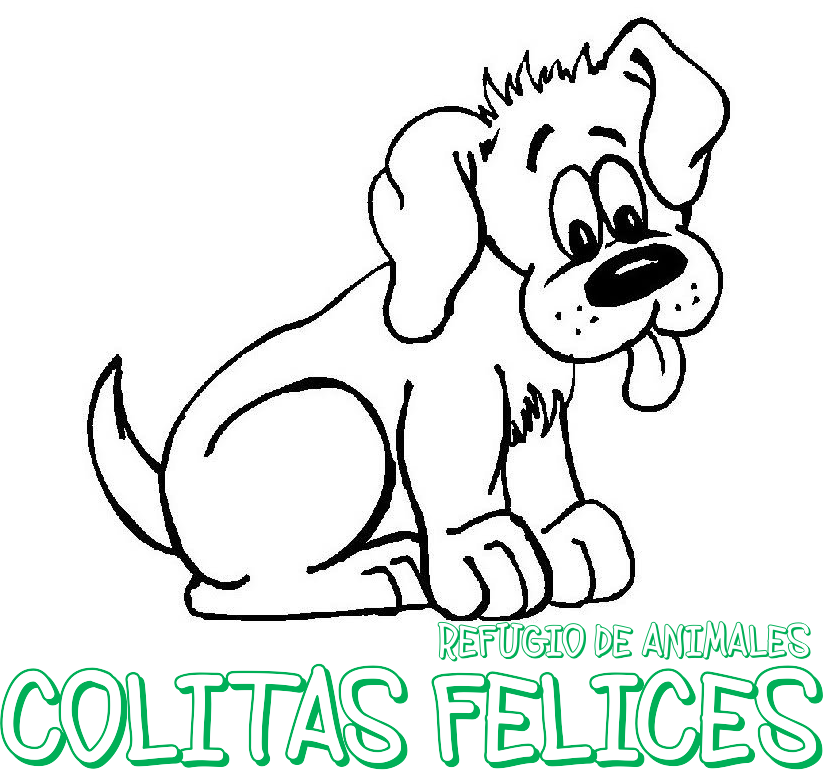
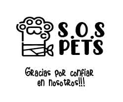
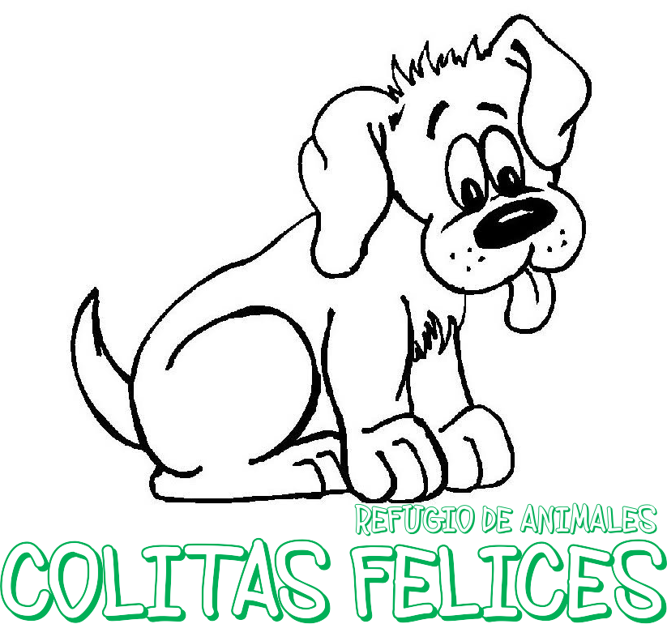
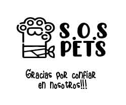

Algunos Refugios que trabajan con nosotros

 



BIENVENIDOS
¿Que es SOS PETS?
Es una aplicación para brindar un equilibrado balance entre la ayuda que requieren los Refugios, Proteccionistas y Rescatistas; y la colaboración que puede brindar la comunidad, ya sea individuo, veterinarias, negocios a fines y/o aportes publicitarios. Pretendemos minimizar los esfuerzos que hacen las entidades protectoras de mascotas para solicitar ayuda (en alimentos, pañales, medicina, colchones, abrigos y/o carritos) organizando las colaboraciones que prestan la comunidad sensible al deterioro o maltrato de mascotas. Las Organizaciones: Refugios, Proteccionistas y Rescatista podrán solicitar su ingreso a la aplicación. Se informará los datos de referencia y contacto para ser verificados y una vez aprobado su ingreso se le asignará un código de identificación. Las entidades podrán anunciar a la mascota (que recibirá una identificación) con su pedido seleccionando el tipo de ayuda previamente codificados. La aplicación anunciará los pedidos solicitados para que cualquier colaborador pueda ofrecer su ayuda, por medio de formularios de ayuda tipificados. Dichos formularios si están correctos serán redireccionados a los contactos de las entidades solicitantes para efectivizar la ayuda. Recibida la ayuda las Organizaciones calificarán la ayuda recibida en (concretada o pendiente). En caso de existir mas de una ayuda para una misma mascota, se tramitará el caso para otra mascota. Los anunciantes del sitio , podrán ofrecer promos especiales para aquellos colaboradores que hayan prestado ayuda, o por compras de cantidad o por publicidad en redes sociales Nuestro sitio participará con enlaces de reels o videos youtube para cooperar en que puedan conseguir aportes de las redes según el nro de visualizaciones alcanzadas La aplicación además ofrecerá novedades referentes a consejos de veterinarios, de adiestradores, tecnología para seguimiento de pets, castraciones masivas, concursos de pets, ferias etc.